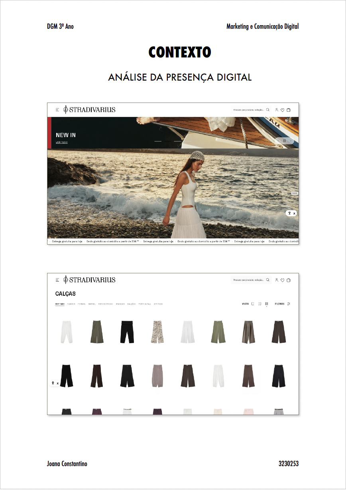

Portfolio / 2025–2026
Multimedia Design
Multimedia Designer
A visual portfolio focused on audiovisual projects, digital communication, web design and visual campaigns.
Selected academic works developed by Joana Constantino during the Multimedia Design degree.
Selected work
Projects
 01
01
Video / 2026
Casa Bonacho — Promotional Video
A short promotional video for a local store dedicated to handmade and regional products from Alentejo.
 02
02
Audiovisual / 2026
É o meu nome — Time Capsule Video
An intimate audiovisual portrait created as a time capsule to be revisited ten years later.

03Digital Marketing / 2026
Style Me by Stradivarius
A digital marketing strategy for an AI styling feature integrated into Stradivarius' website and app.
 04
04
Campaign / 2025
Autism Awareness Day
A visual campaign designed to promote awareness, inclusion and empathy around autism.
p5.js / DOM Interaction
Creative focus: Image
Profile
I am a Multimedia Design student interested in visual communication, audiovisual narratives, interface design and digital experiences.
My work explores clean compositions, strong visual rhythm and clear communication. Through video, image, web design and digital campaigns, I aim to create projects that are visually simple, direct and expressive.
View Curriculum VitaeContact